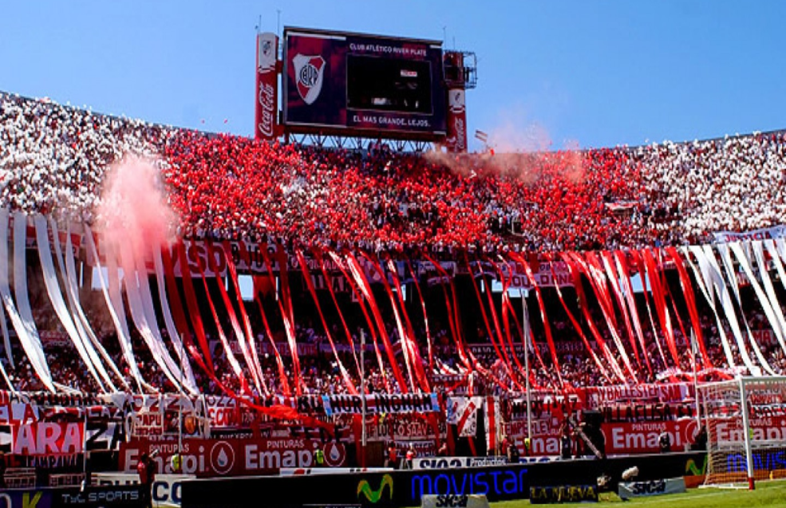
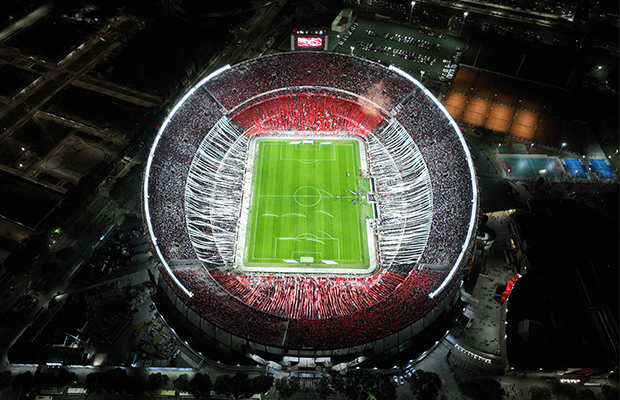
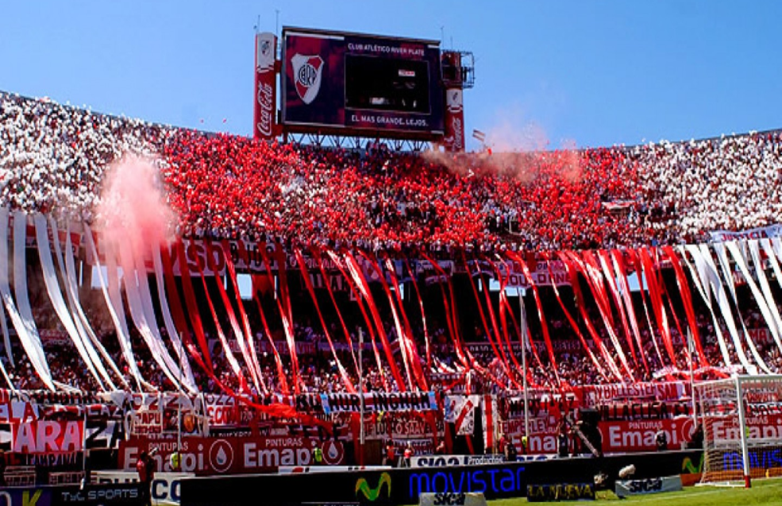
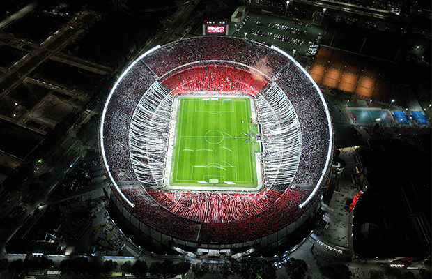

La hinchada de River Plate, conocida como "Los Millonarios", es una de las más apasionadas y numerosas de Argentina y Sudamérica. Su historia se remonta a los orígenes del club en 1901, pero tomó fuerza en la década de 1930 con la construcción del Estadio Monumental. La hinchada se consolidó como un pilar fundamental del club durante la era dorada de "La Máquina" en los años 40, cuando River dominó el fútbol argentino con jugadores como Ángel Labruna y Juan Carlos Muñoz.
En los años 60 y 70, surgieron las primeras barras bravas, con grupos como "Los Borrachos del Tablón", que se convirtieron en el corazón de la tribuna. Esta agrupación, ubicada en la popular Sívori Alta, es famosa por sus cánticos incesantes, banderas, y despliegues de color rojo y blanco. La hinchada ha acompañado al club en momentos históricos, como las Copas Libertadores de 1986, 1996, 2015, y 2018, esta última recordada por la épica final contra Boca Juniors en Madrid.
La hinchada de River también es conocida por su lealtad en tiempos difíciles, como el descenso a la Primera B Nacional en 2011. Durante ese año, los hinchas llenaron estadios y demostraron su apoyo incondicional, ayudando al club a regresar rápidamente a la Primera División. Hoy, la hinchada sigue siendo un símbolo de pasión, con cánticos que resuenan en el Más Monumental y en cada cancha que visita el equipo.
 


